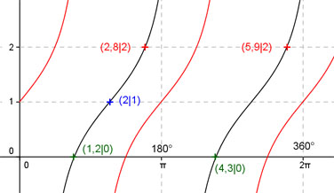
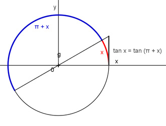

Aufgabe 208 Ergänzen Sie die Wertetabelle für x zwischen 0 und 2π: y = tan (x - 2) + 1 x 2 2,8 oder 5,9 y 1 3 Periode = π ; tan (x - 2) + 1 bedeutet: tan (x) + 1 ist um 1 Einheit nach oben verschoben und hat eine Phasenverschiebung (siehe unten) von 2 oder 114,6° nach rechts. Berechnung der Nullstellen: tan (x - 2) + 1 = 0 |-1 --> tan (x - 2) = -1 --> Substitution (x - 2) = u --> tan u = -1 --> u = arc tan -1 --> u = -π/4 + k * π mit k = 0, 1, 2, ... --> Rücksubstitution liefert x - 2 = -π/4 + k * π | +2 --> x = -π/4 + k * π + 2 x1 = 2 - π/4 = 1,2 oder 68,75° gerundet. x2 = π + 1,2 = 4,34 (4,3 gerundet) oder 246,4°.  Funktionswert an einer Stelle x ermitteln: 2 * 180° x = 2 oder ---------- = 114,6° π f(2) = tan (2 - 2) + 1 = tan (114,6° - 114,6°) + 1 = 1 Berechnung der x-Werte für y = f(x) = -1: f((x)) = 2 eingesetzt,existiert für tan (x) + 1 zwischen 0 und π bzw. 0° und 180° und zwischen π und 2π bzw. zwischen 180° und 360°. tan (x) + 1 = 2 |-1 --> tan x = 1 --> x = arc tan 1 = 0,785 = π/4. --> x1 = 0,785 = π/4 x2 = (π + π/4) = 3,93 gerundet. (siehe Einheitskreis)  Unter Berücksichtigung der Phasenverschiebung: 2,8 * 180° x1 = (0,785 + 2) = 2,785 (2,8 gerundet) oder ------------ = 160,4° π x2 = (3,93 + 2) = 5,93 (5,9 gerundet) oder 338°.